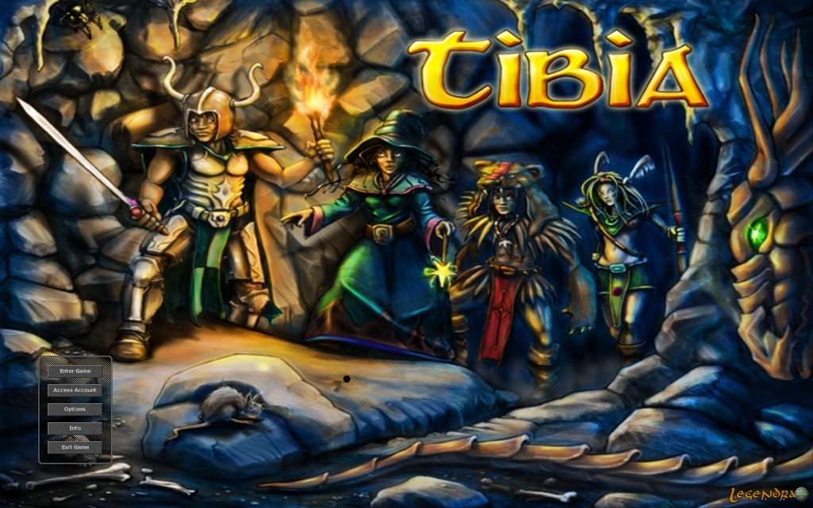

Tibia: O MMORPG que faz sucesso desde 1997
Sobre
Tibia é um jogo eletrônico de RPG multijogador (MMORPG) gratuito, desenvolvido pela CipSoft. Criado em 1997, é um dos jogos mais antigos do gênero. Nele, os jogadores podem desenvolver as habilidades de seus personagens, buscar tesouros, resolver enigmas e explorar áreas como cidades, masmorras, florestas, desertos, ilhas, praias, minas, etc. Os personagens podem disputar lutas entre si ou com criaturas,[8] tais como monstros, dragões, demônios, orcs, utilizando armas e magias, enquanto os NPCs não podem ser atacados.
Ao iniciar o jogo, o seu avatar começa na ilha de Dawnport, uma ilha onde todo jogador deve permanecer até desenvolver habilidades necessárias para o progresso e sobrevivência nos outros mapas do jogo. Quando o jogador atinge o nível 8, ele pode, opcionalmente, escolher a sua vocação e deixar a ilha. Em Dawnport, o jogador familiariza-se com o jogo e aprende muitas coisas sobre o mundo de Tibia, como magia ou usar flechas e espadas.
História
A história começou no outono europeu de 1995 quando três estudantes (os alemães Stephan Börzsönyi, Ulrich Schlott e Stephan Vogler), que enxergavam o grande potencial que a internet poderia vir a ter, tiveram a ideia de criar um RPG online. Contudo, eles desejavam que o jogo deles possuísse uma interface gráfica, diferentemente dos vários Multi-user dungeons baseados em texto da época. Guido Lübke começou como um jogador normal, e em 1999 se juntaria aos três como o quarto oficial executivo do jogo.
O jogo
A partir de 1996 começaram a surgir os primeiros planos concretos para o jogo. Foi escrita a programação básica para a rotina de manuseio de objetos, foi utilizado o editor MudEdit para o desenho dos níveis, itens, e personagens; e foi testado o protocolo TCP/IP para a comunicação entre o servidor e o jogo. Em agosto do mesmo ano se havia um servidor rodando em Linux e um cliente do jogo rodando em Windows, e já era possível movimentar um personagem ao longo dos níveis. Grande parte dos gráficos usados nos cenários do jogo era similar ao do jogo Ultima VI.
O desenvolvimento do jogo no início se deu basicamente nas horas livres dos quatro criadores. A longo do outono europeu de 1996, Tibia foi ganhando novas funcionalidades: como nomes individuais aos personagens, a habilidade deles pegarem, moverem ou largarem itens, e a habilidade de conversarem uns com os outros.
Ao longo dos próximos meses o desenvolvimento de Tibia continuou, o jogo recebeu o seu primeiro NPC (Sam, presente no jogo até hoje na cidade de Thais), os seus primeiros monstros (trolls, spiders e cyclops; também ainda presentes no jogo) e papeis dentro do jogo nos quais podia se escrever mensagens permanentes. Além disso foi introduzida graficamente a terceira dimensão no jogo. Devido a todas essas novas funcionalidades, a versão do jogo foi atualizada para Alpha 2.0 em 3 de junho de 1997.
Vocações
Existem cinco vocações básicas entre as quais o jogador pode escolher uma para seu personagem:
Feiticeiro / Sorcerer
Sorcerers não são grandemente habilidosos com armas e não levam vantagem em combates corpo a corpo, mas podem ser devastadores com inúmeros tipos de magias e runas de ataque. Sua especialidade é a energia e fogo.
Druida / Druid
Druids são muito conhecidos por seus poderes de cura, e apesar de evoluírem com a mesma proporção dos (sorcerers), não têm a mesma força de magia. Por serem muito semelhante aos sorcerers, os druidas fazem uso das mesmas runas que eles. Sua especialidade é o gelo e terra.
Paladino / Paladin
Paladins são grandemente habilidosos em combate à distância e por isto são os melhores arqueiros. Possuem um potencial mágico alto, mas sendo inferior aos magos e superior aos cavaleiros. As armas utilizadas pelos paladinos, são: arcos, flechas, lanças e dardos.
Cavaleiro / Knight
Knights são os melhores no manuseio de armas, sendo fortes e resistentes para combates corpo-a-corpo, com suas habilidades de defesa e ataques armados. Sua evolução na área de magias é a mais limitada e lenta em comparação às demais vocações. As armas utilizadas pelos cavaleiros, são: espadas, machados e clavas.
Monge / Monk
O Monk possui um estilo de jogo único, com sistemas próprios como Harmony (Harmonia), que permite acumular energia ao usar habilidades ofensivas para depois aprimorar feitiços; Virtues (Virtudes), que concedem bônus passivos variados conforme o estilo de jogo escolhido; e Serene (Sereno), uma mecânica que aumenta o poder do Monk quando está sozinho ou com poucos inimigos próximos, incentivando tanto o jogo solo quanto o em grupo.
OBS: Monk (Monge) é a quinta vocação introduzida em Tibia, lançada oficialmente em 2025, sendo a primeira nova classe adicionada ao jogo em mais de 25 anos. Esta vocação combina combate corpo a corpo (melee) com habilidades de suporte e cura, utilizando artes marciais e poderes místicos para auxiliar aliados e derrotar inimigos
Geral
Tibia é lembrado por sua alta dificuldade, sistema de penalidades por morte e mecânicas old school. Sua comunidade é especialmente forte na América Latina, Brasil, Polônia e Alemanha. O jogo possui servidores com diferentes regras (PvP, PvE e Hardcore PvP) e recebe atualizações periódicas com novos conteúdos, eventos e melhorias.
Conclusão
Apesar dos gráficos simples, Tibia se consolidou como um dos MMORPGs mais influentes da internet, mantendo uma base fiel de jogadores e status cult dentro da cena dos jogos online.